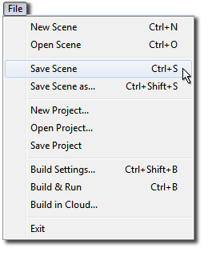
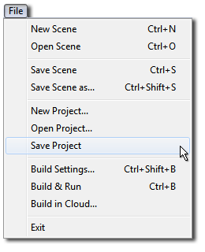
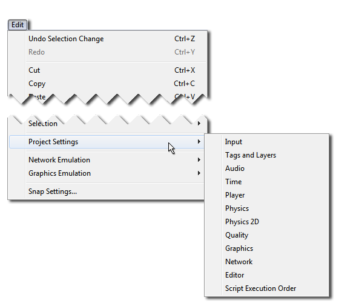

Saving Your Work
Unity stores lots of different types of information about your project, and some of these are saved in different ways to others. This means that when your work is saved depends on what kind of changes you are making.
Of course, we recommend you save regularly, and use a Version Control System (VCS) to preserve incremental changes to your work, and allow you to try out and roll back changes without risking loss to your work.
Saving changes to the current scene ("Save Scene")

Scene changes include modifications to any objects in the Hierarchy. For example, adding, moving or deleting Game Objects, changing parameters of hierarchy Game Objects in the inspector.
To save changes to the scene, select Save Scene from the file menu, or hit Ctrl/Cmd + S. This saves current changes to the scene and Does a "Save Project" (below).
This means that when you do a "Save Scene", everything is saved.
Saving project-wide changes ("Save Project")

Some changes that you can make in Unity are not scene-specific, they are project-wide. These settings can be saved independently of the scene changes, by selecting "Save Project" from the file menu.
Using "Save Project" does not save changes to your Scene, only the project-wide changes are saved. You may want to, for instance, save your project but not changes to your scene if you have used a temporary scene to make some changes to a prefab.
The project-wide changes which are saved when you "Save Project" include:
All the "Project Settings":
All the settings for each of the "Project Settings" menu items, such as custom input axes, user-defined tags or layers, and the physics gravity strength are saved when you "Save Project".

Changes to these settings are saved in the Library folder when the Project is saved:
- Input: saved as ´InputManager.asset´
- Tags And Layers: saved as ´TagManager.asset´
- Audio: saved as ´AudioManager.asset´
- Time: saved as ´TimeManager.asset´
- Player: saved as ´ProjectSettings.asset´
- Physics: saved as ´DynamicsManager.asset´
- Physics 2D: saved as ´Physics2DSettings.asset´
- Quality: saved as ´QualitySettings.asset´
- Graphics: saved as ´GraphicsSettings.asset´
- Network: saved as ´NetworkManager.asset´
- Editor: saved as ´EditorUserSettings.asset´
The "Build Settings"
Build Settings are also saved in the Library folder as ´EditorBuildSettings.asset´.

Changes to assets in the Project Window
Also saved along with project-wide settings are changes to assets that do not have an "apply" button, for example changes to any of the following:
- Material parameters
- Prefabs
- Animator Controllers (state machines)
- Avatar Masks
- Any other asset changes that do not have an "apply" button
Changes that are immediately written to disk (no save required):
There are some types of change which are immediately written to disk without the need to perform a "Save" action at all. These include the following:
Changes to any import setting requiring the user to press an "apply" button
The import settings for most asset types require that you press an "Apply" button for the changes to take effect. This causes the asset to be re-imported according to the new settings. These changes are saved immediately when you hit the Apply button. For example:
- Changing the texture type of an image asset
- Changing the scale factor of an 3D model asset
- Changing the compression settings of an audio asset
- Any other import setting change which has an "apply" button
Other changes which are saved immediately:
A few other types of data are saved to disk immediately or automatically without the need to perform a "Save" action:
- The creation of new assets, eg: new materials or prefabs (But not subsequent changes to those assets)
- Baked Lighting data (saved when the bake completes).
- Baked navigation data (saved when the bake completes)
- Baked occlusion culling data (saved when the bake completes)
- Script execution order changes (after "apply" is pressed, this data is saved in each script's .meta file)